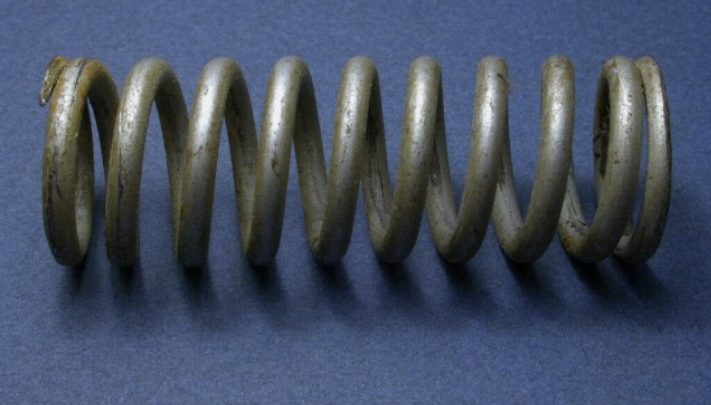
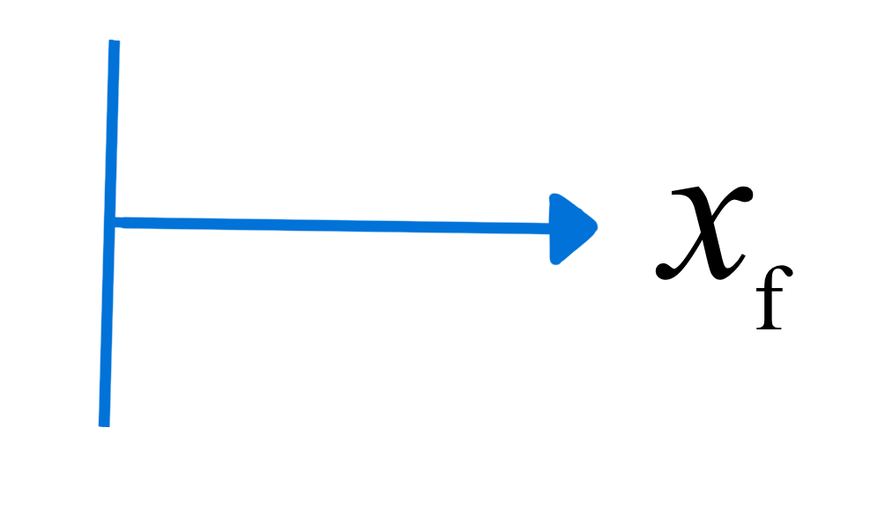
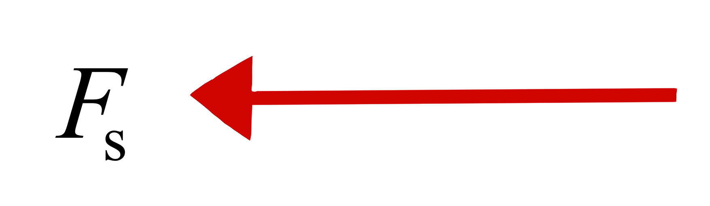
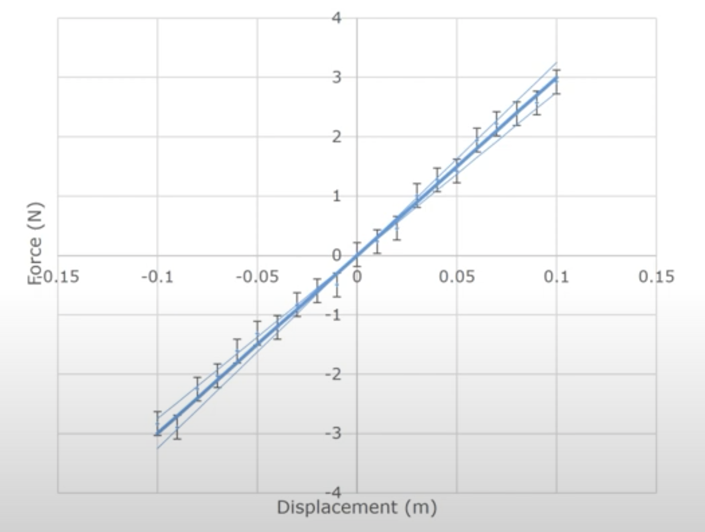

Intro and Basics Part 1
Just the Facts
DOFPro Team
\(m = 1.03 \pm 0.03\ \mathrm{kg}\text{ (95% confidence)}\)
\(u = 2.36 \pm 0.04\ \mathrm{\frac{m}{s}}\text{ (95% confidence)}\)
\(mu = 2.43 \pm 0.08\ \mathrm{\frac{(kg\cdot m)}{s} }\text{ (95% confidence)}\)
\(\frac{1}{2}mu^2 = 2.87 \pm 0.13\ \mathrm{J}\text{ (95% confidence)}\)
A future video will teach you how to propagate the uncertainty. \(\textbf{Remember!}\) A responsible engineer will report uncertainty in the calculated quantity due to the uncertainties present in measured quantities.

CC BY-SA 3.0, link


\(F_\mathrm{s} = k(x_\mathrm{n}-x_\mathrm{f})\)

\(F_\mathrm{_s} = 30.00 \pm 2.50\ \mathrm{(95\%\ conf.)\ N/m}(x\mathrm{_n}-x\mathrm{_f})\)
True value of a measured quantity \(:=\)1 True Mean or Population Mean.
\(\mu \equiv\) True or Population Mean,
i.e., \(\mu =\ \)average value from infinite-precision, full population measurement (almost never known).
Distribution of data about the true mean \(:=\) True Standard Deviation or Population Standard Deviation.
\(\sigma \equiv\) True or Population Standard Deviation
i.e., \(\sigma =\ \)standard deviation given true mean and infinite-precision data points (also almost never known).
Set of Measurements
\(\{x_1,\ x_2,\ \ldots,\ x_N\}\)
e.g., \(x_1 = 43.15\)
A set of \(N\) measurements
implies a set of
\(N\) independent equations
\(\bar{x}\)
\(=\frac{\sum_{i=1}^Nx_i}{N}\)
\(\approx\mu\)
\(\bar{x} \equiv\) sample mean
How do we estimate \(\mu - \bar{x}\)?
Can we calculate the error
\(\varepsilon_i =\mu-x_i\)?
Set of Errors
\(\{\varepsilon_1,\ \varepsilon_2,\ \ldots,\ \varepsilon_N \}\)
We don’t know \(\mu\), so…
Calculate the residuals:
\(e\mathrm{_i} = \bar{x} - x_i\)
Set of Residuals
\(\{e_1,\ e_2,\ \ldots,\ e_N \}\)
estimate of the errors
based on \(\bar{x}\), not \(\mu\)
Sample Variance and Standard Deviation
True variance
\(\sigma^2=\frac{\displaystyle{\sum_{i=1}^N \varepsilon^2_i}}{N}\)
Sample variance
\(S^2=\frac{\displaystyle{\sum_{i=1}^N e^2_i}}{N-1}\)
\(\bar{x},\ e,\) and \(S^2\) are calculated from the \(x_i\).
\(\mu,\ \varepsilon,\) and \(\sigma^2\) are not.
We lose one degree of freedom, or an independent equation, by using the sample mean in our calculation.
The true standard deviation, \(\sigma=\sqrt{\sigma^2}\).
The sample standard deviation, \(S=\sqrt{S^2}\).
Can we estimate \(\mu - \bar{x}\) yet?
No, but we can estimate the spread of our data from \(S\).
The discussion continues in How Deviant and Mean Are Your Data? Intro and Basics Part 2
Thanks for watching!
The Full Story companion video is in the link in the upper left. The next video in the series is in the upper right. To learn more about Chemical and Thermal Processes, visit the website linked in the description to find previous and following videos in this series.
The DOFPro Team